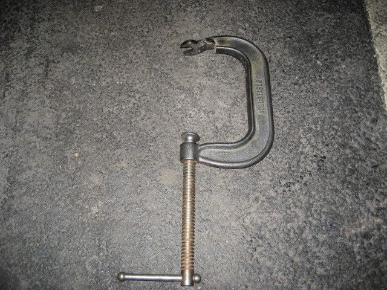

-
Fed up with the price and the availability of open-top valve spring compressors that are local and will work with our engines. I decided to make my own.
The ones that are available at the local automotive tools suppliers are :
1) cam-clamp type, like a c-clamp. not open-top.
2) arm-clamp type, like a harmonic balancer remover. not open-top.
3) c-clamp type, for small engines. open-top, but flimsy and not suitable for vg spring pressure.
4) stud-lever type. open-top, suitable for v8's with rocker studs. may work with vg heads. very large though.
5) rod-lever type. not open-top. spring pressure makes using this one difficult. they sometimes slip causing a lot of damage to your hand, and holes they're bolted to, and your cylinder head.
6) pneumatic type. expensive, requires air-compressor, some open-top and closed-top models.
Open-top allows the use of a magnetic keeper retrieval and installation tool. the installation tool is spring-loaded, and has a magnet on one end to retrieve the keepers/retainer-locks, and has a small clothes-pin like device on the other end. the close pin device has a shapely stamping that allows you to put the locks in the spring loaded arms, and you just position the end of the tool on top of the valve stem and push down gently, and the spring pressure from the arms will just slide the valve keepers over the stem lock-grooves and they will sit there. a good idea is to put grease on the stem (not the lock, as in other methods) so that they stay there while you release the valve-spring tool from the head.
So how did i make it?
Simple. I took a 10" cast iron c-clamp with a rotating swivel-ball head on the side that you tighten (this ensures that once it hits the valve, the screw-drive will turn but the head will not, making it safe from scratches to the valve face). This clamp is pretty generic in that you probably have one laying around the house. The cast iron on this one is hard, yet not so hard that it's tough to cut… it should hold up to the vg high-pressure springs with ease, as it's about 7 to 8mm thick at its thinnest point.
I used a cut-off wheel on the clamping-face on the cast-iron side (opposite of the screw drive side) and cut out a slot large enough so that the sides that are left seat on the entire retainer, and the slot is wide enough so that it goes 2mm beyond the edges of the locks when you start to loosen the tool. This ensures that it won't knock the locks off when removing them, sending your spring flying across the room with a lock or two and your retainer (or worse, into your face).
I then noticed that being a C-clamp, they are generally not rounded on the inner side of the clamp like an F clamp. so after mounting it on the head for a test-run, the clamp itself would bottom out on the valve-cover gasket mating surface. so with a sharpie, I marked a notch that goes far beyond that collision point (a good 6 or 7mm beyond) so that I can get maximum compression on the spring. Alternatively, if using this on a RB head, you would need to weld a steel tube of proper OD to the edge of the tool to surround the notch that was made, so you can get into the recessed valve-spring bores and still retain the open-top style needed to access the locks without trouble, as RB heads are a bitch to work on.
This method is so cheap that i'll just buy another clamp and spray paint them pretty colors to make them so much cooler.
I did a test run with both the valve-spring compressor and the valve-lock tool and it worked out perfect. This will allow me to do the head work on my VG33 heads later tonight with relative ease.
Total Cost: 15.99 CAD
Total time: 2 hours
Testing, filing, and making sure all the burrs were removed, all the edges slightly rounded to prevent scratching of the retainer surfaces. I also resorted to chucking my cut-off wheel into a corded power-drill because the compressor is way loud at 3 in the morning and someone has my angle-grinder that would have made this take about 3/5ths of the time.
Pictures will be posted later. -
Pics or GTFO!
85 Z31 6.0 LSX turbo 766whp/792wtq
04 GTO, LS6, big cam, porting, N20… underway for summertime daily driver. -
FULL SIZE
[attachment=0:1q47a7li]_DSC4938.jpg[/attachment:1q47a7li]
CLOSE-UP
[attachment=1:1q47a7li]_DSC4937.jpg[/attachment:1q47a7li]
ANOTHER CLOSE-UP
[attachment=2:1q47a7li]_DSC4936.jpg[/attachment:1q47a7li] -
MAGNETIC END
[attachment=0:32cripgs]_DSC4941.jpg[/attachment:32cripgs]
KEEPER-KEEPER END (CLOSED)
[attachment=2:32cripgs]_DSC4939.jpg[/attachment:32cripgs]
KEEPER-KEEPER END (OPENED)
[attachment=1:32cripgs]_DSC4940.jpg[/attachment:32cripgs] -
BALL-PIVOT SCREW-DRIVE SIDE ON VALVE
[attachment=1:30y6fn1s]_DSC4946.jpg[/attachment:30y6fn1s]
VALVE-RETAINER FLAT-SIDE POSITIONED AND SNUGGED
[attachment=0:30y6fn1s]_DSC4949.jpg[/attachment:30y6fn1s] -
VALVE-SPRING COMPRESSOR TIGHTENED HALF-WAY
[attachment=0:2egqttrn]_DSC4948.jpg[/attachment:2egqttrn]
VALVE-SPRING COMPRESSOR TIGHTENED FULL-LOCK (KEEPERS EXPOSED)
[attachment=1:2egqttrn]_DSC4957.jpg[/attachment:2egqttrn] -
I realize that I cut the base a little too far, but I was unaware of how deep it would end up going when fully seated. I also wanted to be able to position it at various angles so I notched it a fair bit.
In hind-sight, I would notch it less, but it's negligible, as it's plenty strong. I'd fucking sleep with a compressed spring pointing at me and rest well.
I'll be making another for the RB head when I get around to that thing, come this winter.
I'm going to round out the edges at the top of the feet and the side that gets close to the valve cover mating surface when I bust out the die-grinder to work on the heads, and I'll radius the cuts so that they are not stress points. But again, I'm confident this thing won't break. It's a lot beefier than the ones I was able to purchase locally, so no sweat here.

Copyright © 2006–. All rights reserved. Privacy Policy